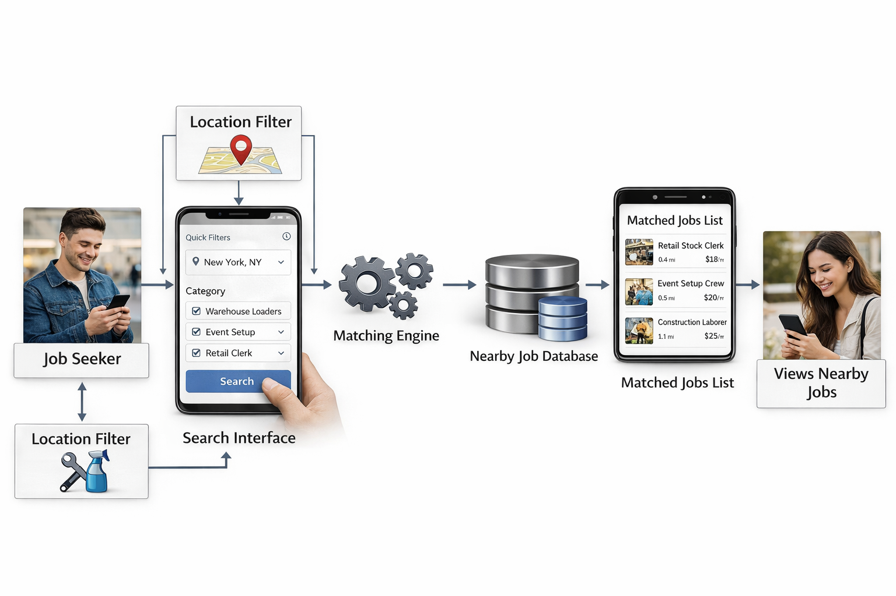

Verified Listings, Safer Hiring
Replace unstructured social posts with verified job listings, clearer role details, and built‑in trust signals that reduce scams and misunderstandings.
EasyEarn is a Final Year Project that tackles Malaysia's gig economy gap with a secure, structured, and multilingual job matching portal.
Building a trusted, accessible platform that connects job seekers and employers across Malaysia — beyond major cities.
Many gig workers rely on unstructured social media, which creates scam risks and weak verification. EasyEarn adds verified listings, structured applications, and trusted work records.
University students, housewives, unemployed individuals, SMEs, and individual hirers who need flexible work and fast hiring.
To establish a trusted, inclusive, and policy‑aligned gig job platform that improves visibility of short‑term opportunities, strengthens employer accountability, and expands safe access to flexible work across urban and non‑urban regions of Malaysia.
FYP1 focuses on planning, design, and prototype. FYP2 delivers full development in iterative sprints.
Problem analysis, requirements, UI/UX wireframes, system architecture, and prototype validation.
Agile sprints for authentication, job posting, safety & trust, work history, and admin analytics.
Testing, deployment, and evaluation against success criteria and security policies.
Tap the card to flip through three key benefits of EasyEarn—designed for safer hiring, faster matching, and a trusted work history that grows with every job.
Replace unstructured social posts with verified job listings, clearer role details, and built‑in trust signals that reduce scams and misunderstandings.

Quick filters by location and category help job seekers find nearby work fast, while employers reach the right candidates without long hiring delays.
Auto‑resume, ratings, and verified work history help both sides build credibility and make smarter, faster hiring decisions.
Selected tools and add-on features based on the approved proposal.
HTML, CSS, JavaScript with responsive UI and structured components.
Supabase Auth, Postgres database, Storage, and GitHub Pages deployment.
Chart.js for dashboards and platform performance insights.
jsPDF to generate downloadable resumes from work history.
Google Translate integration for Bahasa Malaysia, Mandarin, Tamil, and more.
UI/UX wireframes using Canva, plus chatbot support and clean onboarding flows.
Explore the FYP build and see how the platform connects flexible work with trusted hiring.